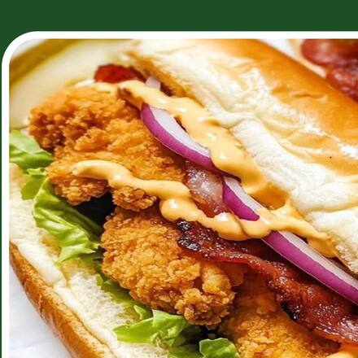
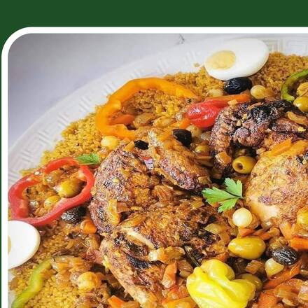

01
Le café passé à la demande
Classique, corsé, allongé ou cappuccino : chaque tasse est tirée au moment où vous la commandez, jamais réchauffée.
Prêts en moins de 5 minutes. À emporter, ou livrés à Attikoumé et dans les quartiers voisins.


Bougez la souris — la pile suit
Frites et grillades servies de 11 h à 21 h · Le café et le thé, toute la journée.
Une cafétéria de quartier tenue comme telle : on connaît les habitués, on sert vite, on ne triche pas sur la portion.
Classique, corsé, allongé ou cappuccino : chaque tasse est tirée au moment où vous la commandez, jamais réchauffée.
Spaghettis, couscous, poulet braisé : préparés sur place.
De 350 F le thé au citron à 2 500 F les cuisses de poulet braisé. Le tarif du comptoir est le seul tarif.
Le comptoir ouvre avant les bureaux et ferme après les cours du soir.